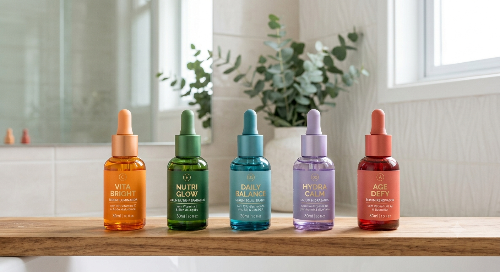
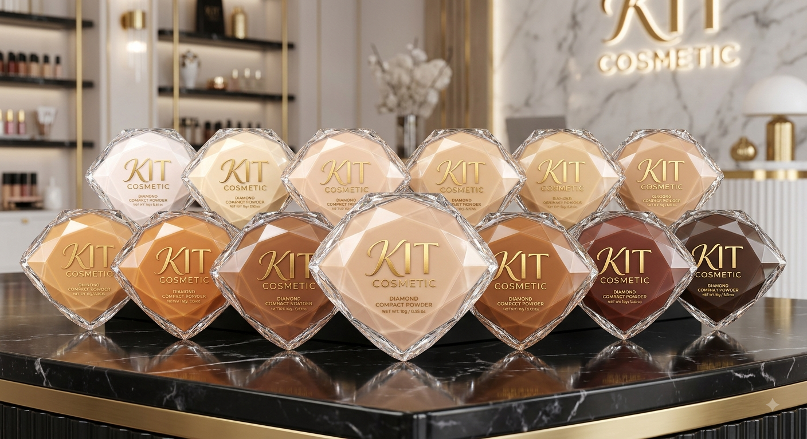
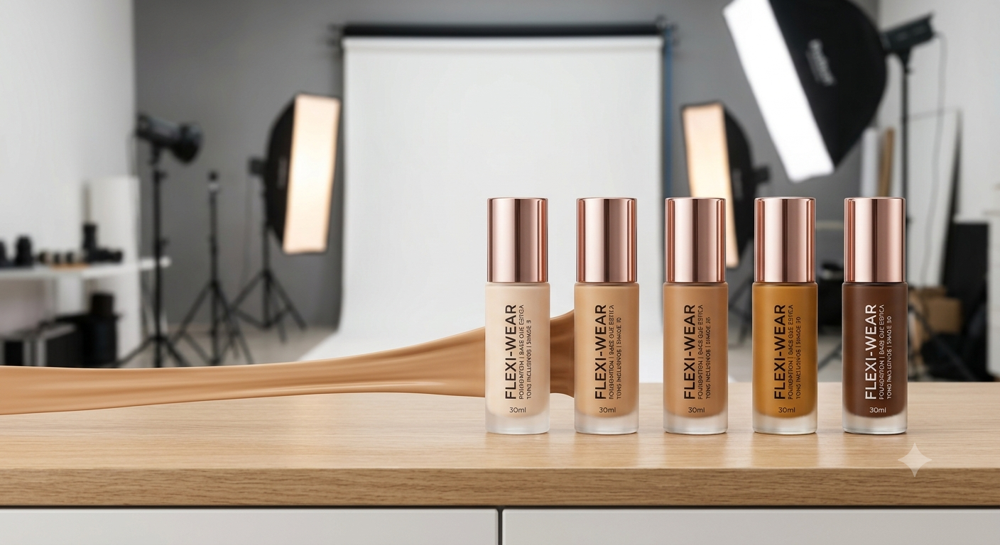
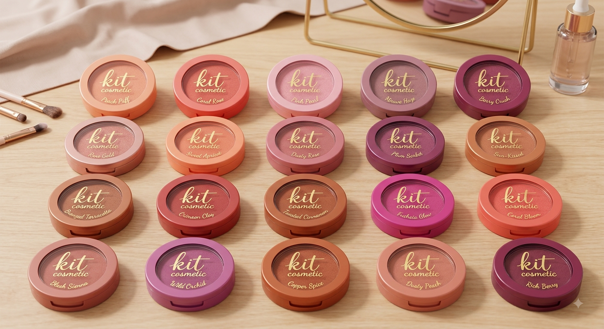
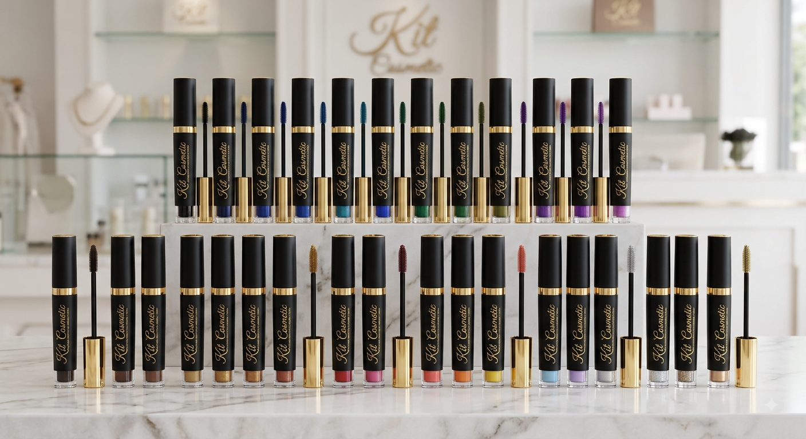

Sérum Facial
Cuidado especial para uma pele hidratada e iluminada.
R$ 49,90Responda às perguntas abaixo e descubra quais cuidados podem combinar melhor com sua pele.
Confira nossos produtos de beleza.

Cuidado especial para uma pele hidratada e iluminada.
R$ 49,90
Acabamento uniforme para completar sua maquiagem.
R$ 39,90
Cobertura bonita e uniforme para valorizar sua maquiagem.
R$ 54,90
Um toque de cor para deixar seu visual ainda mais bonito.
R$ 34,90
Realce seus cílios e destaque ainda mais o seu olhar.
R$ 29,90A KIT é uma loja dedicada a oferecer produtos de beleza e cuidados pessoais, ajudando nossas clientes a encontrar produtos que combinem com suas necessidades.
Seu carrinho está vazio.